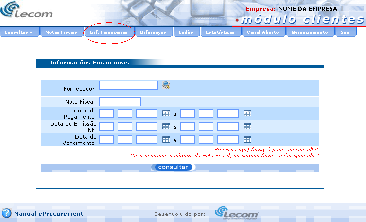
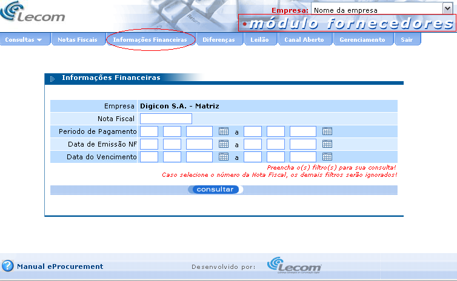
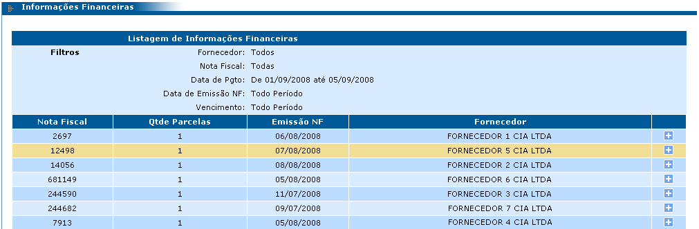
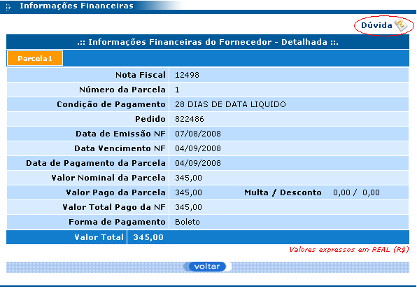
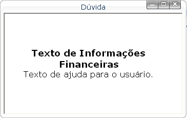
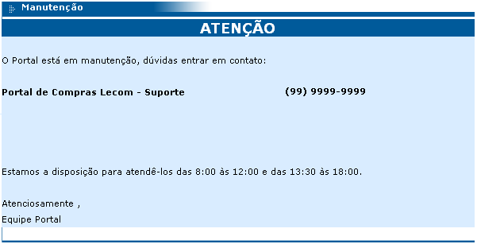

Documentação do Cliente - eProcurement
Este módulo serve para cadastrar textos dinâmicos para as áreas de Contato, Informações Financeiras e Manutenção da ferramenta, e é possível cadastrar textos para cada idioma disponível. Observe a figura a seguir:
Como é possível perceber, esta tela se parece bastante com um editor de texto e é muito fácil de usar. O campo “Tipo de texto” é uma lista que contém as opções:
Contato: o texto cadastrado para esta área é exibido quando o usuário clicar sobre o link Contato disponível na tela de login do módulo Fornecedor (observe as figuras 6 e 7 a seguir). Sendo assim, é possível cadastrar algum texto contendo, por exemplo, o telefone de contato da empresa.
Clicando em “módulo fornecedores” e, em seguida, em Contato, a tela com as informações cadastradas acima será exibida, como no exemplo abaixo:
Informações Financeiras: o texto cadastrado para esta área é exibido na área de ajuda da tela de detalhamento de Informações Financeiras tanto do módulo clientes quanto do módulo fornecedores. A tela de Informações Financeiras pode ser acessada clicando na opção “Inf. Financeiras” (módulo clientes) ou na opção “Informações Financeiras” (módulo fornecedores) do menu superior da ferramenta.
 Se for feita uma pesquisa em qualquer uma das telas das figuras 8 e 9, será exibida uma listagem. Clicando sobre qualquer nota fiscal desta listagem (figura 10), é exibida uma tela de detalhamento da nota fiscal escolhida. Para visualizar o texto de ajuda cadastrado no cadastro de textos, pasta clicar sobre o link “Dúvida” conforme destacado na figura 11, observe:
 Após clicar no link “Dúvida”, será exibida a seguinte tela:
Manutenção: este texto é exibido quando a ferramenta estiver em manutenção, é uma forma de avisar o usuário que isto está acontecendo. Sendo assim, sempre que a ferramenta estiver com a configuração de manutenção ativada, a mensagem cadastrada neste módulo será exibida assim que o usuário tentar acessar a url do e-Procurement pelo navegador. A figura a seguir mostra um exemplo de mensagem que pode ser utilizada neste caso:
